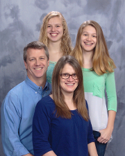

History
I was born in Peoria, but raised in Cedar Rapids, Iowa. So I'm a mid-western kid. I like the prairie and being able to see the horizon. I arrived here after graduating from The University of Iowa and now Illinois has been my home for most of my life.
Family
I've got a wife and two daughters. I grew up with my mother and two sisters. There's a whole lot of women in my life. I'd tell you more about them, but this is all about me!
Interest
Most of my interest you can see in the list at the bottom of the Keweenaw page. Add to that volleyball, wood working, and sometimes reading.
Here's Us:
